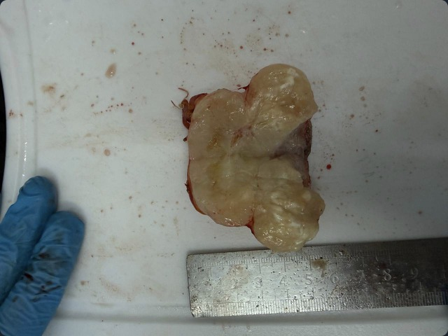
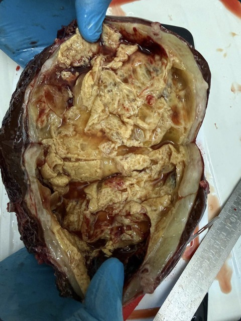
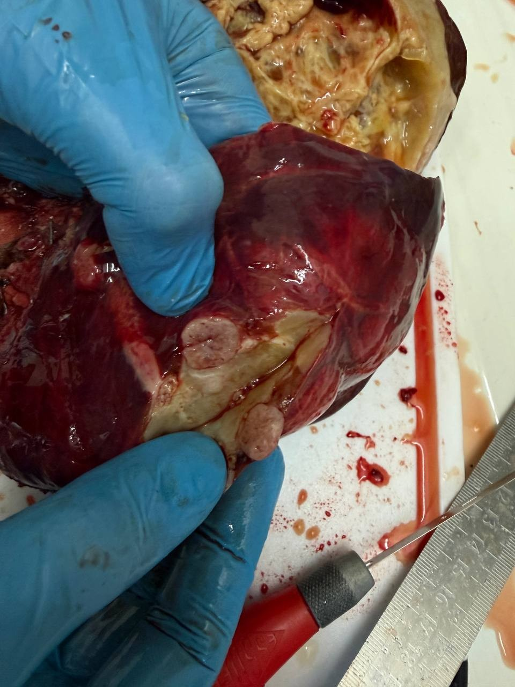
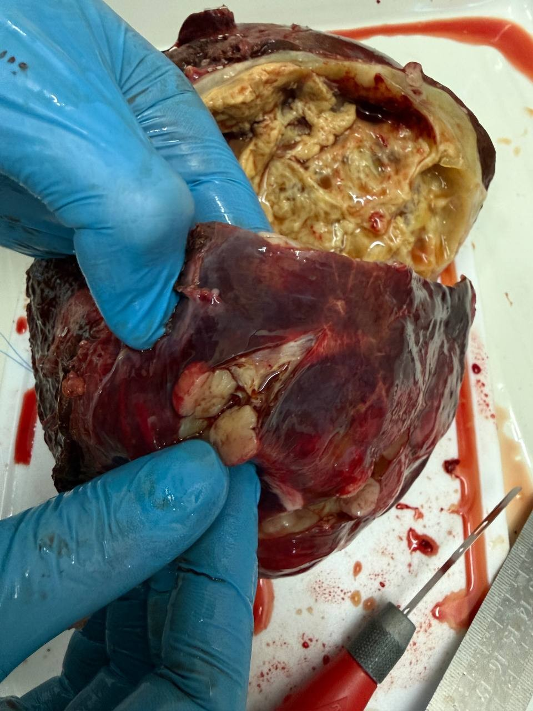
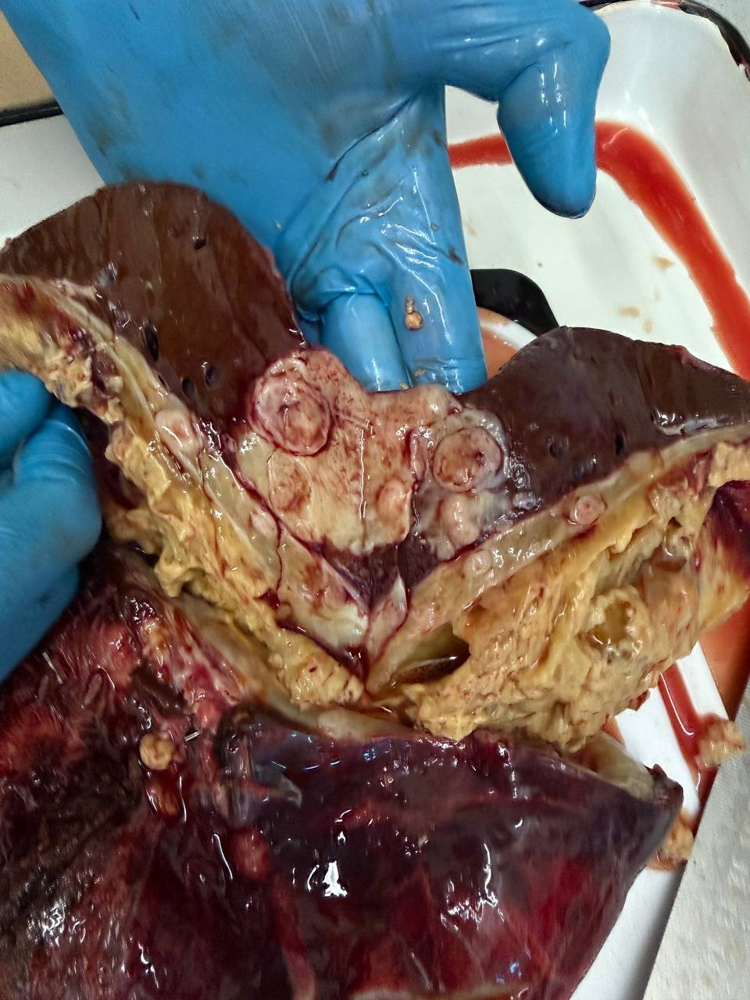

Source and quality. Photographs taken by the pathology department and forwarded through a messenger, which compresses images. Photos 3 to 5 are the files received; photos 1 and 2 were available only as parts of chat screenshots, so they are smaller and lower quality. Originals at full size have been requested from the pathologist (family statement). The captions are the pathologist's own words from the chat, placed above each photo; the descriptions under the photographs are this site's description of what is visible and not a pathology finding.
Photographs










What was said about them
- OPINION The pathologist's captions (above): the stomach tumour on section; the liver tumour with a fluid-filled cavity on section; "new growth nodules" next to the main tumour.
- OPINION Pathologist's voice message the same afternoon (a reply to the family's questions; he was driving): everything has so far been cut carefully and will be fixed in formalin until the next day (22.10.2026). Tomorrow pieces will be taken as needed, including the wall of the cavity, its inner wall and all the additional nodules outside. Then it will be clear whether there are viable tumour cells or not.
- Family questions in the chat: whether the nodules seen on the 3D model are wall components of the mass (the 3D-model screenshot was sent), and whether, since there is no black necrosis, the tissue was alive or already hyalinised. These were answered by the voice message above only in the sense that histology will decide; no further answer was received.
- Family request: the photographs in original size (the messenger compresses them) and sampling from several regions, as discussed with the pathologist on 20–21.10.2026 (see the pending list).
INTERPRETATION Macroscopic appearance does not establish viability, tumour type or the nature of the nodules. The question of viable tumour in the cavity wall and in the additional nodules, and the identity of the two additional foci removed from the omentum and the abdominal wall, will be decided by the histology expected after sampling on 22.10.2026. See also the 21 Oct call summary.